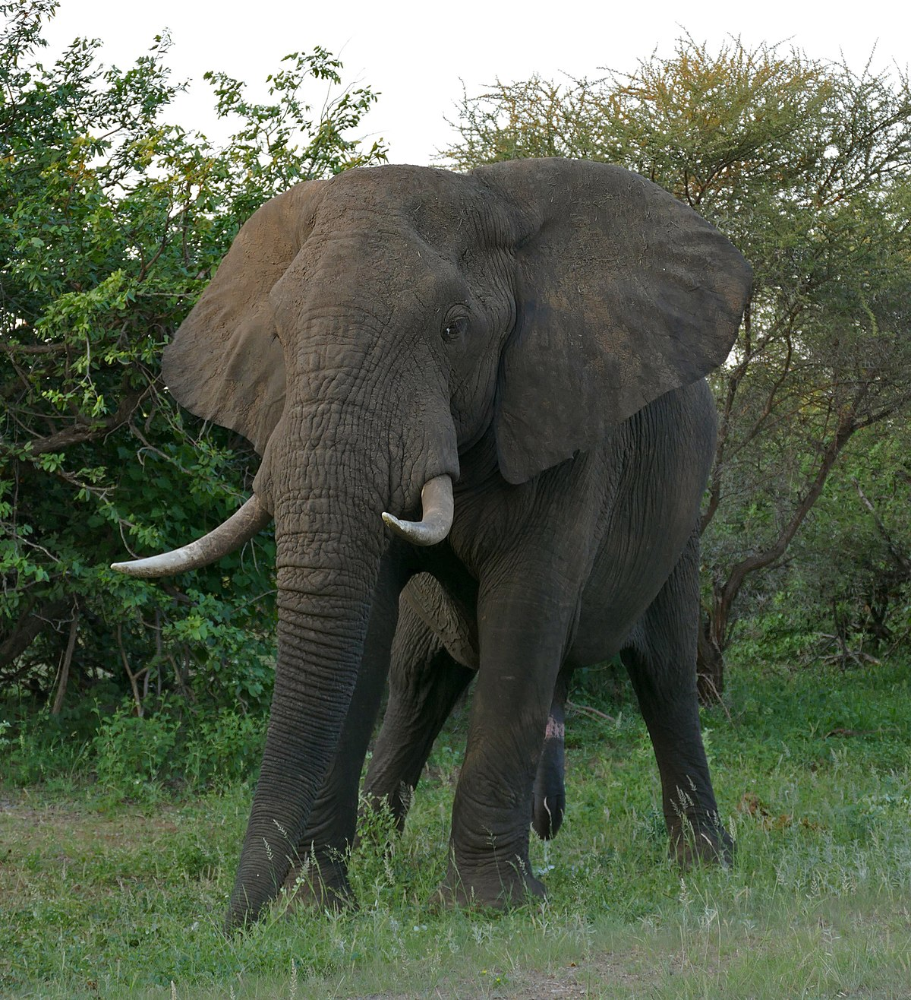

Слоны — величественные животные, у многих народов, проживающих в местах обитания слонов, ассоциирующихся
с мудростью и знанием. Это неудивительно — интеллект слонов очень высок, что нашло своё отражение во многих
культурах, особенно в древней культуре Индии. Слоны — создания умные и спокойные, но не стоит их злить, потому что
разъярённый слон — это действительно страшно.

Интересные факты о слонах.
Слоны – ближайшие родственники ныне вымерших мамонтов.
Вопреки распространённому мифу, слоны не боятся мышей
У слонов удивительно хорошая память. Известны случаи, когда
слоны мстили обидчикам спустя много лет. Впрочем, добро слоны тоже не забывают.
Общеизвестный факт — слоны являются самыми крупными сухопутными животными на земле.
Сердце слона может достигать веса в 25-30 кг. В обычном ритме оно сокращается примерно раз в две
секунды, гоняя кровь по огромному телу.
На воле слоны до 20 часов в сутки посвящают поискам еды.
В день взрослый слон выпивает 100-200 литров воды, а то и больше.
Слоны живут в среднем полвека. Самый известный долгожитель — слон по имени Линь Ван, проживший на этом свете 86 лет.
Слоновий хобот может вместить до восьми литров воды.
У слонов чрезвычайно острое обоняние, гораздо острее, чем у людей.